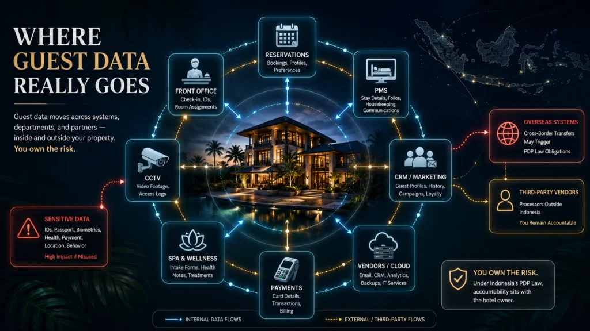
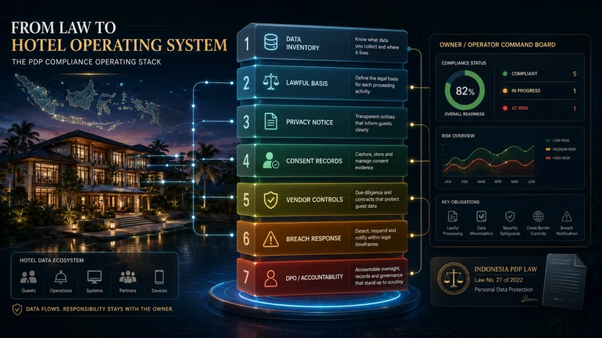
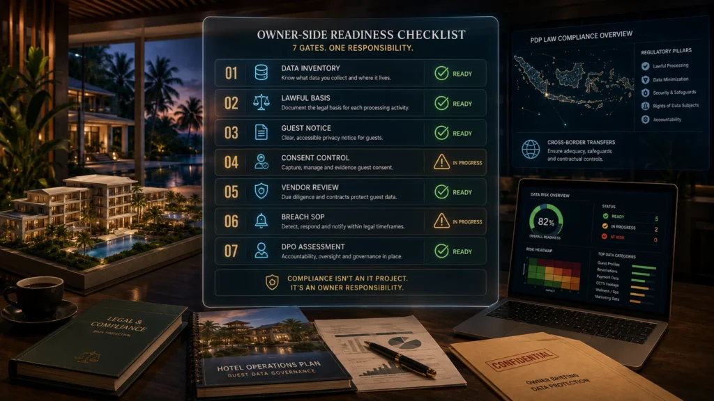

Under the Indonesia PDP Law for Bali hotels, a property can create serious data-protection risk long before a guest complains, a regulator investigates, or a breach becomes public.
Not because the hotel is trying to misuse data.
Because guest data moves through reservations, front office, PMS, OTAs, payment gateways, WhatsApp sales, CCTV, spa intake forms, wellness assessments, CRM, email marketing, loyalty systems, outsourced vendors, and sometimes overseas servers - often without one clear owner inside the business.
The Indonesia PDP Law for Bali hotels is now a board-level and owner-level hospitality issue. For Bali hotels, villas, lifestyle retreats, and wellness resorts, compliance is not solved by uploading a privacy policy to the website. It requires an operating framework that connects law, systems, people, vendors, guest journey, incident response, and commercial governance.
This article is written for owners, investors, developers, operators, asset managers, and family offices. It is not legal advice. It is an operator-first view of what the PDP Law means for hospitality assets that collect, store, process, and transfer guest data in Indonesia.
Key Takeaways
- The Indonesia PDP Law for Bali hotels is already a live compliance issue. The transition period has ended, while the dedicated PDP authority and implementing regulation are still developing.
- Hotels collect more personal data than many owners realize, including passports, payment data, preferences, CCTV footage, guest communications, employee data, and in wellness assets, health-related information.
- A privacy notice alone is not compliance. Hotels need data maps, lawful-basis logic, consent records, breach-response procedures, processor controls, DPO assessment, and staff training.
- Bali wellness resorts and longevity concepts carry higher exposure when they collect health information, biometrics, diagnostics, IV drip records, recovery assessments, or medical-partner data.
- For owners and investors, PDP Law hotel compliance is now part of asset-risk management, pre-opening readiness, operator governance, direct-booking infrastructure, and transaction due diligence.
Why the Indonesia PDP Law for Bali Hotels Matters Now
Indonesia enacted Law No. 27 of 2022 on Personal Data Protection in October 2022. The law created a national framework for personal-data protection and introduced obligations for personal data controllers and processors.
The two-year transition period ended in October 2024. In practical terms, Indonesian businesses can no longer treat PDP compliance as a future issue.
At the same time, the enforcement architecture is still maturing. The dedicated PDP authority has been mandated but has not yet fully become the settled operating institution expected under the law. DLA Piper’s Indonesia data protection guide notes that the PDP Agency is targeted to be established and operational in 2026, while the implementing regulation remains part of the current regulatory development process.
That creates a dangerous middle period for hotels.
Many operators assume that weak enforcement today means low risk. Owners should take the opposite view. The right time to build compliance is before enforcement becomes routine, before a breach occurs, before a brand partner asks for evidence, before a transaction due diligence process exposes the gap, and before a guest-data incident becomes reputationally visible.
This is similar to the wider Bali compliance pattern Zenith has discussed in Navigating Bali’s Licensing Maze: Why Foreign Investors Get It Wrong: the real risk is often not that owners ignore regulation completely, but that they treat compliance as paperwork instead of operating governance.
The Core Problem Under the Indonesia PDP Law for Bali Hotels
Most hotel owners underestimate the amount of personal data inside their asset.
A typical Bali hotel or villa operation may collect:
- guest name, nationality, address, phone number, email, passport, ID, and booking details;
- payment data and transaction records;
- arrival information, flight details, transport requests, room preferences, dietary preferences, birthdays, anniversaries, and guest notes;
- CCTV footage across public and back-of-house areas;
- Wi-Fi login information, website cookies, booking-engine behavior, and CRM activity;
- WhatsApp conversations and sales inquiries;
- spa consultation forms, allergies, contraindications, treatment notes, and wellness preferences;
- employee documents, payroll data, BPJS data, disciplinary records, and internal HR files;
- vendor and owner communication records;
- loyalty, retargeting, and email-marketing data.
In normal hotels, this is already significant. In wellness resorts, medical wellness projects, longevity clubs, recovery centers, or properties offering IV drips, diagnostics, biometrics, health assessments, or clinical partnerships, the exposure becomes more serious because the data may move into specific or sensitive personal-data categories.
The issue is not only what the hotel collects. It is where the data goes, who can access it, how long it is retained, whether the guest was properly informed, whether the lawful basis is documented, whether consent is valid, whether a third-party processor is controlled, and whether the property can respond within the required timeline if something goes wrong.
This is why Bali hotel data privacy is now directly connected to pre-opening readiness, technology selection, brand trust, guest journey design, and owner-side risk control.
For owners and operators, the Indonesia PDP Law for Bali hotels turns guest-data handling into a management, vendor, systems, training, and governance issue - not only a legal-document issue.

What Most Owners and Operators Get Wrong
Most owners treat PDP compliance as a legal-document exercise.
They ask:
“Do we have a privacy policy?”
They should ask:
“Can every department prove what guest data it collects, why it collects it, where it stores it, who accesses it, which vendor receives it, whether it leaves Indonesia, and what happens if the guest asks for deletion or a breach occurs?”
They ask:
“Can the PMS vendor handle data security?”
They should ask:
“Does the hotel have a processor agreement, access-control rules, breach notification obligations, cross-border-transfer logic, and internal owner accountability?”
They ask:
“Can we use guest data for marketing?”
They should ask:
“Which legal basis supports the marketing activity, was consent properly obtained where required, is the consent recorded, can the guest withdraw it, and can the hotel prove the withdrawal was actioned?”
They ask:
“Can the wellness team collect health information?”
They should ask:
“Is this hospitality preference data, health-related personal data, clinical data, or partner-operated medical data - and who is legally responsible for each layer?”
The mistake is operational. Data protection fails when the law lives with the lawyer, the hotel privacy notice Indonesia requirement lives on the website, the PMS lives with IT, the guest relationship lives with Front Office and Sales, and no one owns the full data journey.
External Legal Baseline: What the PDP Law Requires
The PDP Law establishes a broad personal-data protection framework for Indonesia. ICLG’s Indonesia Data Protection Laws and Regulations guide summarizes the PDP Law as Indonesia’s main personal-data protection legislation and describes it as a comprehensive framework applicable across private and public organizations.
At a high level, hotels and hospitality companies need to pay attention to several core areas.
1. Personal data and sensitive personal data
Personal data includes information that identifies or can identify a person. The law distinguishes general personal data from specific personal data. Specific personal data can include health information, biometric data, genetic data, criminal records, children’s data, and personal financial data.
For hotels, this means passports, payment records, CCTV footage, guest profiles, and wellness-related intake forms cannot be treated casually. For wellness and longevity hospitality, the classification risk is higher.
2. Lawful basis for processing
Hotels need a lawful basis for processing personal data. Common legal bases may include consent, contract performance, legal obligation, vital interests, public interest, and legitimate interest.
A reservation record may be processed because the hotel needs it to perform the accommodation contract. Passport or registration data may be processed because of legal obligations. CCTV may be processed for security under a legitimate-interest logic, subject to proper notice and proportionality. Marketing, profiling, optional personalization, and some wellness-data use may require more careful consent logic.
The operational point is simple: one hotel does not have one lawful basis. Different data uses require different legal bases.
3. Consent must be real, not assumed
Where a hotel relies on consent, it should not treat silence, pre-checked boxes, vague website language, or broad “guest agrees to everything” clauses as safe.
Consent needs to be specific, informed, clear, and recorded. The hotel must be able to prove what the guest agreed to, for what purpose, when the consent was given, and how withdrawal is handled.
This matters directly for email marketing, retargeting, loyalty databases, wellness questionnaires, guest-preference profiling, AI personalization, and optional service upsells.
4. Data-subject rights must be operationalized
Guests and other data subjects have rights. These may include access, correction, deletion, restriction, objection, portability, withdrawal of consent, complaint, and legal remedy.
For a hotel, the critical question is not whether these rights exist in a policy. The question is whether the Front Office, Reservations, Sales, Spa, HR, and GM know what to do when a guest asks:
“What data do you hold about me?”
“Please delete my data.”
“Stop using my details for marketing.”
“Where did you send my information?”
Most hotels are not built to answer these questions within a controlled internal process.
5. Breach notification requires preparation before the breach
Data breach response cannot be invented during the breach.
A hotel needs an incident-response procedure covering detection, escalation, containment, legal assessment, guest communication, regulator notification, evidence preservation, vendor coordination, and owner reporting.
This is especially important where third-party vendors manage PMS, booking engines, payment gateways, CRM, Wi-Fi, CCTV, wellness apps, or cloud-hosted records.
For a hotel data breach Indonesia scenario, the commercial damage may go beyond the fine. A leaked passport database, WhatsApp guest list, spa intake form, or wellness record can create reputational risk, owner disputes, vendor conflict, and insurance questions.
6. Cross-border transfers are a major hotel issue
Many Bali hotels use systems hosted outside Indonesia. A PMS, central reservation platform, CRM, loyalty system, payment processor, channel manager, email platform, or corporate reporting dashboard may transfer data to another jurisdiction.
Cross-border data transfer Indonesia compliance cannot be assumed because “the vendor is international.” The owner and operator need to understand which data leaves Indonesia, where it goes, which entity receives it, which transfer mechanism applies, and whether the contract supports the transfer.
7. DPO assessment is now more important
The hotel DPO Indonesia question should not be treated casually. A 2025 Constitutional Court decision clarified that the relevant DPO criteria should be read as alternative / cumulative-alternative, not only purely cumulative. For additional context, see this Constitutional Court coverage on citizens’ personal data protection and the DPO interpretation.
This matters for hospitality groups, larger hotels, properties using large-scale systematic monitoring, data-heavy wellness concepts, and operators processing sensitive guest data at scale.
The right question is not “Can we avoid appointing a DPO?” The right question is “Have we documented whether our processing activities trigger the DPO requirement, and if they do, who is accountable?”

The Zenith View: Why the Indonesia PDP Law for Bali Hotels Is an Operating-System Problem
The Zenith view is straightforward:
A Bali hotel is not PDP-ready because it has a privacy notice. It is PDP-ready when the operating system can execute the privacy promise.
That means:
- Reservations knows which data is necessary for booking and which data is optional.
- Front Office knows how to explain data use at check-in.
- Sales and Marketing know when consent is needed and how to record it.
- Spa and Wellness know the boundary between preference data, health data, and medical-partner data.
- IT knows which systems store personal data and which vendors have access.
- HR knows employee data is also personal data.
- Security knows CCTV has privacy implications.
- Finance knows payment data and transaction records carry risk.
- The GM knows who escalates a breach.
- The owner knows whether the operator, brand, vendor, or medical partner carries which responsibility.
- The asset manager can evidence compliance during due diligence.
This is why the Indonesia PDP Law for Bali hotels belongs inside hotel governance, not only inside legal files.
It is also why PDP compliance should be addressed during pre-opening. In Zenith’s Hotel Pre-Opening Management Bali: 100-Point Checklist, systems, staff readiness, vendor contracts, guest communication, data privacy, and technology integration are treated as part of opening readiness - not as afterthoughts.
Hotel Guest Data Exposure Map
| Hotel Function | Typical Data | Main Risk | Owner / Operator Control |
|---|---|---|---|
| Reservations | Name, email, phone, booking details, payment guarantee | Overcollection, weak retention, OTA/PMS transfer gaps | Data inventory, lawful-basis map, PMS/vendor review |
| Front Office | Passport, ID, nationality, check-in records, guest notes | Excessive copying, uncontrolled staff access | SOP, access control, retention rules |
| Sales & Marketing | Email lists, WhatsApp leads, CRM profiles, campaign data | Invalid consent, poor withdrawal process | Consent framework, CRM governance, opt-out logs |
| Spa & Wellness | Treatment notes, contraindications, allergies, wellness preferences | Sensitive data exposure, unclear medical boundary | Wellness-data protocol, privacy notice, partner contracts |
| Medical / Longevity Partner | IV drips, diagnostics, health assessments, clinical records | Wrong legal entity, unclear responsibility, health-data risk | Licensed partner structure, consent, data-sharing agreement |
| CCTV / Security | Video footage, incident footage | Monitoring without notice, excessive retention | CCTV signage, retention policy, restricted access |
| IT / PMS / Cloud Vendors | System data, backups, user logs, integrations | Cross-border transfer, weak processor controls | Vendor due diligence, data-processing clauses |
| HR | Employee IDs, payroll, BPJS, disciplinary records | Employee privacy gaps | HR privacy notice, access control, retention schedule |
Operational Implications Under the Indonesia PDP Law for Bali Hotels
1. Build a data inventory before changing documents
The first step is not drafting a privacy policy. The first step is understanding the asset.
A hotel should map:
- which data is collected;
- which department collects it;
- why it is collected;
- which system stores it;
- who accesses it;
- which vendor receives it;
- whether it leaves Indonesia;
- how long it is retained;
- what happens when the guest asks for access, correction, deletion, or withdrawal.
Without this inventory, the privacy notice becomes guesswork.
2. Create a lawful-basis matrix
Each data use needs a legal logic. Contractual necessity, legal obligation, consent, legitimate interest, and vital interest are not interchangeable.
For example:
- booking data may be needed for the accommodation contract;
- foreign-guest reporting may sit under legal obligation;
- emergency medical sharing may be vital interest;
- CCTV may rely on security-related legitimate interest with proper notice;
- marketing communications may require consent or another carefully assessed basis;
- wellness data may require more specific consent and tighter handling.
The commercial danger is overreliance on consent. If consent is withdrawn, the hotel must know what processing stops, what data remains necessary under another basis, and what must be deleted or restricted.
3. Rebuild the privacy notice around the real guest journey
The privacy notice should not be generic legal filler.
It should explain, in clear language:
- what data the hotel collects;
- why the hotel collects it;
- which data is required and which is optional;
- how long data is kept;
- who receives the data;
- whether data is transferred overseas;
- how the guest can exercise rights;
- how to contact the responsible person or DPO where applicable;
- how wellness or medical partner data is handled.
For Bali properties, Bahasa Indonesia and English should both be considered operationally, especially where Indonesian law and international guests intersect.
4. Fix consent capture and withdrawal
Consent should be recorded, specific, and traceable.
Hotels should review:
- website booking forms;
- newsletter signups;
- WhatsApp inquiry flows;
- CRM imports;
- spa intake forms;
- wellness questionnaires;
- loyalty enrollment;
- cookies and analytics;
- remarketing pixels;
- post-stay marketing.
The hotel should also have a withdrawal process. A guest who unsubscribes from marketing or withdraws consent should not remain active in five disconnected lists.
5. Prepare the breach response before the breach
A breach-response SOP should define:
- what qualifies as a suspected personal-data incident;
- who receives the first report;
- who classifies the incident;
- who contacts the vendor;
- who informs owner / operator leadership;
- who prepares legal notification;
- who communicates with affected guests;
- who preserves evidence;
- who signs off public communication;
- what timeline applies.
This should be trained. A front-line team member receiving a guest complaint about leaked passport data should not improvise.
For practical readiness logic, this connects directly to Zenith’s Pre-Opening Handover Audit Bali - 42-Point Guide, because guest-data governance is part of handover readiness, not only IT setup.
6. Review third-party processor contracts
Hotels depend on vendors. That is unavoidable. But vendor dependence does not remove owner/operator responsibility.
Review contracts with:
- PMS providers;
- channel managers;
- booking engines;
- OTAs where relevant;
- CRM platforms;
- email marketing platforms;
- payment gateways;
- CCTV/cloud-storage providers;
- Wi-Fi providers;
- wellness software;
- medical partners;
- outsourced HR/payroll providers;
- digital agencies.
Contracts should address confidentiality, security, permitted processing, subcontractors, audit rights, breach notice timelines, data deletion, data return, cross-border transfers, and cooperation with data-subject requests.
7. Assess DPO Requirements Under the Indonesia PDP Law for Bali Hotels
The DPO question should be documented. The hotel should evaluate:
- scale of processing;
- systematic monitoring;
- CCTV footprint;
- sensitive data;
- wellness or health-related data;
- multi-property database size;
- profiling and personalization;
- loyalty or CRM scale;
- children’s data, if relevant;
- automated decision-making or AI personalization.
If the requirement is triggered, the DPO role should not be symbolic. It should have access to management, operational visibility, and the ability to coordinate across departments.
Commercial Implications for Owners and Investors
PDP compliance affects asset risk
A hotel with weak data governance carries hidden risk. That risk may not appear in a standard P&L, but it can emerge during:
- owner due diligence;
- operator appointment;
- brand onboarding;
- lender review;
- insurance review;
- sale process;
- data breach;
- guest dispute;
- employee complaint;
- medical partner incident;
- regulatory inspection.
For investors, the practical question is:
“Can this asset prove that its guest-data operation is controlled?”
If the answer is no, the compliance gap becomes an asset-quality issue.
PDP compliance affects direct-booking strategy
Hotels want more direct bookings, stronger CRM, better guest personalization, and lower OTA dependency.
But direct-booking strategy depends on data.
A property that cannot manage consent, guest preferences, email marketing, WhatsApp follow-up, cookies, CRM segmentation, and opt-out requests properly is not ready for sophisticated direct-booking infrastructure.
The commercial upside of guest data only exists when the data is lawful, structured, secure, and operationally governed.
This also connects to AI discoverability. In Zenith’s article on Hotel Branding for AI Search, the core argument is that digital visibility requires structured information, proof, and operational clarity. The same logic applies to guest-data governance: a hotel cannot build intelligent digital infrastructure on top of weak data discipline.
PDP compliance affects wellness credibility
This is especially important for wellness and longevity assets.
A standard spa may collect treatment preferences and contraindications. A longevity resort may collect deeper health assessments, biomarker data, IV drip records, diagnostic results, medical intake forms, supplement protocols, and recovery data.
That changes the governance standard.
Owners cannot build a premium wellness or longevity concept and then operate health-related data through casual WhatsApp, shared spreadsheets, uncontrolled staff access, or vague partner arrangements.
If the wellness product is premium, Bali wellness resort guest data governance must also be premium.
PDP compliance affects operator and partner structure
The PDP Law raises practical contract questions:
- Who is the data controller?
- Who is the processor?
- Who owns the guest database?
- Can the operator use guest data after termination?
- Can the brand transfer guest data to overseas systems?
- Can a medical partner access hotel guest records?
- Who notifies whom after a breach?
- Who pays for remediation?
- Who handles data-subject requests?
- What happens when the HMA ends?
These are not only legal questions. They are operating-model questions.
What To Do Before Committing Capital or Launching a Data-Heavy Asset
Before opening, acquiring, repositioning, or investing in a Bali hotel or wellness asset, owners should request a PDP guest-data readiness review.
At minimum, review these seven areas:
| Readiness Area | Key Question |
| Data inventory | Do we know what personal data the asset collects, stores, and transfers? |
| Lawful basis | Is each data use tied to a documented legal basis? |
| Privacy notice | Does the guest-facing notice match the real operating model? |
| Consent governance | Can the hotel prove consent and process withdrawal? |
| Vendor control | Do PMS, CRM, marketing, payment, CCTV, wellness, and medical vendors have proper data clauses? |
| Breach response | Can the hotel respond within the required timeline with documented escalation? |
| DPO / accountability | Has the hotel properly assessed whether a DPO or equivalent privacy function is required? |
For existing hotels, this can be handled as a diagnostic. For pre-opening projects, it should be built into the operating system before PMS configuration, CRM setup, website launch, spa menu launch, wellness programming, or medical-partner onboarding.
Zenith’s hospitality consultancy and management services are designed around this type of owner/operator problem: translating feasibility, compliance, technology, pre-opening, and operating risk into practical governance before the asset becomes expensive to correct.

FAQ
Does every Bali hotel need to comply with Indonesia’s PDP Law?
Commercial hospitality operations that process personal data in Indonesia should assume the PDP Law applies. Hotels, villas, resorts, branded residences, wellness retreats, and lifestyle assets routinely process guest, employee, vendor, payment, CCTV, and marketing data. The more important question is not whether the law applies in principle, but how much data the property collects, which data is sensitive, which systems process it, whether data is transferred abroad, and whether the hotel can prove compliance.
Is a privacy policy enough for PDP compliance?
No. A privacy policy is only one part of compliance. A hotel also needs data mapping, lawful-basis documentation, consent records, data-subject request procedures, vendor controls, cross-border transfer review, retention rules, access control, breach-response SOPs, and staff training. If the privacy policy says one thing but the PMS, CRM, spa, sales team, and vendors operate differently, the hotel has a governance gap.
Do Bali hotels need a Data Protection Officer?
Not every hotel will automatically need a DPO, but many properties should assess the requirement carefully. The risk increases for larger operators, multi-property groups, properties using large-scale monitoring, data-heavy CRM, CCTV networks, profiling, wellness data, health-related information, or sensitive personal data. After the Constitutional Court interpretation of Article 53, owners should not rely on a narrow reading of DPO triggers without proper review.
What is the biggest PDP risk for wellness resorts?
The biggest risk is the blurred boundary between hospitality data, wellness data, and medical data. A resort offering spa treatments has one risk profile. A resort offering diagnostics, IV drips, biometrics, recovery assessments, medical partner programs, or longevity protocols has a higher exposure. The operating model must clarify which entity collects the data, who controls it, which consent applies, who stores it, who can access it, and who is responsible if something goes wrong.
Why do cross-border transfers matter for Bali hotels?
Many Bali hotels use overseas systems for PMS, reservations, loyalty, CRM, payment, reporting, email marketing, analytics, or brand platforms. If guest data leaves Indonesia, the hotel should understand the destination, receiving entity, purpose, transfer mechanism, contractual safeguards, and guest-disclosure requirements. International software does not automatically solve Indonesian compliance. It may create the transfer issue that the owner must govern.
What should an owner check before buying or developing a Bali hotel?
An owner should check whether the asset has a real data governance framework, not only a website privacy page. Key items include data inventory, vendor contracts, PMS and CRM architecture, consent records, breach SOPs, retention rules, DPO assessment, staff access controls, wellness-data handling, and cross-border transfer logic. For a development project, these controls should be designed before opening, not retrofitted after guest data is already scattered across systems.
Why is the Indonesia PDP Law for Bali hotels a commercial issue, not only a legal issue?
The Indonesia PDP Law for Bali hotels affects commercial risk because guest data sits inside reservations, CRM, payments, wellness, marketing, direct booking, loyalty, vendor contracts, and owner/operator agreements. If these systems are weak, the asset carries hidden exposure. That exposure can affect brand trust, transaction due diligence, operator onboarding, insurance review, wellness credibility, and the owner’s ability to use guest data commercially.
Summary Takeaways
The Indonesia PDP Law for Bali hotels is not only a legal compliance issue. It is an operating-system issue.
Hotels collect guest data across many departments and systems. Wellness and longevity assets collect even more sensitive information. Owners who treat PDP compliance as a website-document task are exposed.
A serious hotel or resort needs to know:
- what data it collects;
- why it collects it;
- where it stores it;
- who receives it;
- whether it crosses borders;
- how long it is kept;
- how consent is proven;
- how guest rights are handled;
- who responds to a breach;
- who owns accountability.
The commercial value of guest data depends on trust, structure, and control. Without that control, data becomes a liability.
CTA
Zenith Hospitality Global helps owners, developers, investors, and operators translate regulatory exposure into practical hotel operating systems.
If you are developing, acquiring, repositioning, or operating a Bali hotel, villa resort, wellness retreat, or longevity asset, request a PDP guest-data compliance diagnostic before launching new PMS, CRM, wellness, marketing, or medical-partner infrastructure.
The Indonesia PDP Law for Bali hotels should be addressed before guest data becomes scattered across systems, vendors, departments, and third-party partners.
Start a conversation